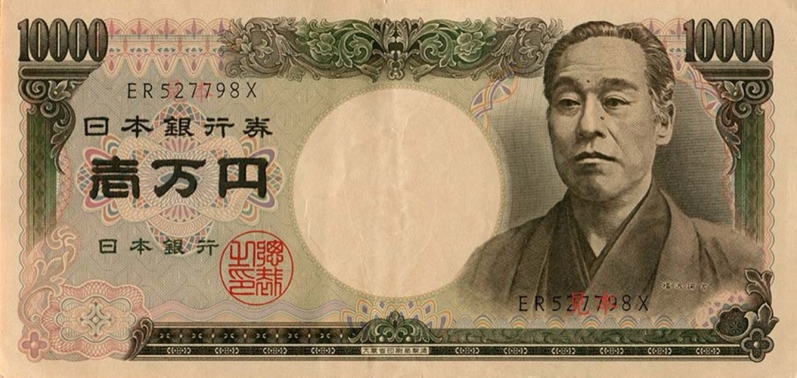
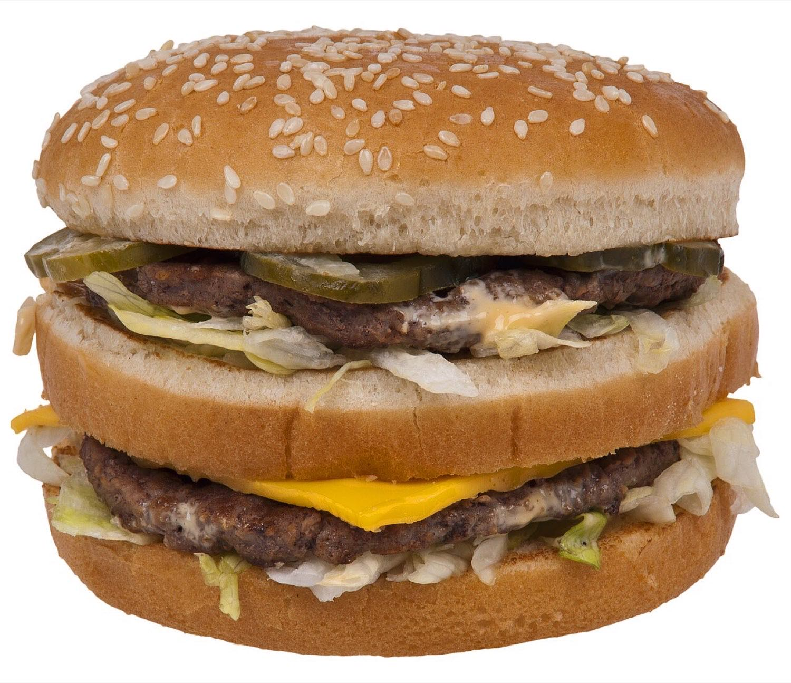
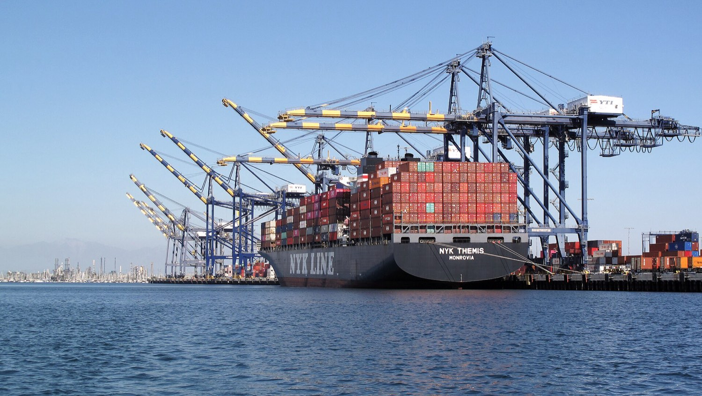
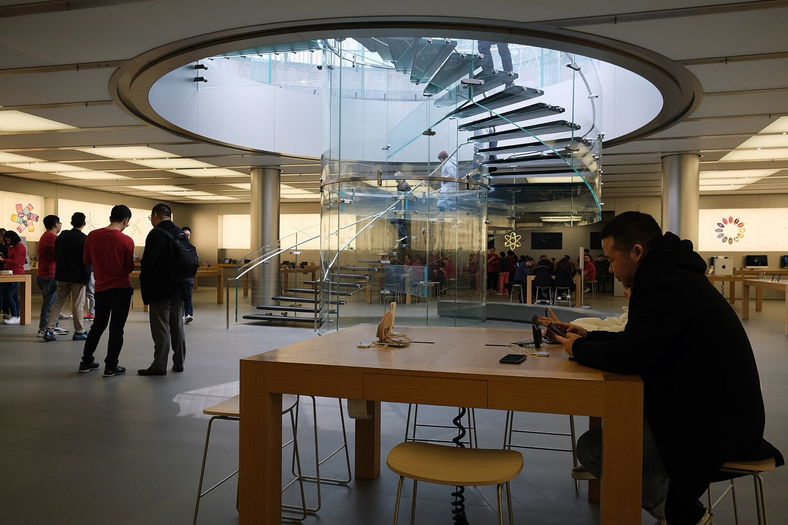
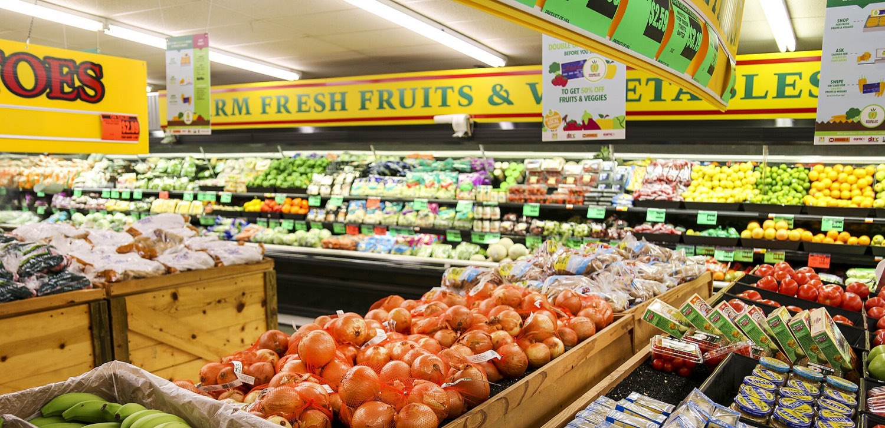

去过几个国家之后，几乎每个人都会攒下一批"对不上账"的记忆。它们通常不是什么惊天动地的观察，就是几个很具体、很琐碎的价格：在东京打了一次一公里出头的出租车，跳出来两千多日元；在新加坡的便利店买一瓶可乐，三块多新币，换算成人民币接近二十；在美国堪萨斯的超市里推着购物车走一圈，发现几乎所有商品的标价都是个位数，低得让人怀疑自己看错了小数点。
这些价格单独看，每一个都能找到理由搪塞过去——景点贵、岛国资源少、汇率不一样。但把它们摆在一起，理由就开始互相打架了。如果日本是发达国家，为什么日元这么"不值钱"，二十日元才换一块人民币？如果新加坡什么都靠进口所以贵，为什么一瓶可乐贵了五倍，星巴克却几乎没涨？如果美国的东西那么便宜，为什么把标价乘以七之后，反而显得比国内还贵？
这本书想做的，是把这几张收据一张张拆开，装回一套完整的框架里。这套框架其实并不复杂，核心只有三件事：汇率是什么、物价为什么在不同国家有系统性的差别、以及工资在这一切里扮演什么角色。读完之后，你手里会多出三把可以随身携带的尺子，下一次在国外的便利店拿起一瓶水，能立刻判断出它对当地人来说到底贵不贵、对你来说又意味着什么。
约合一百元人民币。国内同样的距离十几块就够了，差了将近十倍。一个发达国家的出租车，凭什么贵到这个程度？
约合二十元人民币，是国内的五倍。可同一条街上的星巴克，价格跟国内几乎持平——一瓶可乐和一杯拿铁的比价关系，在两个国家完全不同。
乘以七就是五百多人民币，在国内属于"要想一想才买"的价位。但付钱的美国人几乎没犹豫——七十五美元在他们的心理账本里，好像只值两百块。
先给一个提前剧透：上面这三张收据里，藏着的不是三个问题，而是同一个问题的三种形态。而且更有意思的是，绝大多数人第一次出国时对物价的"直觉判断"，其实相当准——准到统计学家用几万条价格数据算出来的结果，跟一个大学生逛完超市之后的估计相差无几。问题只在于，大多数人不知道自己的直觉在用哪把尺子量东西，所以一旦被追问"那到底是几倍"，就答不上来了。这本书的目标之一，就是把那把你一直在无意识使用的尺子，明确地摆到桌面上。
汇率不是价值表
这是所有汇率困惑的起点，也是最容易被一句话解决、却几乎人人都会掉进去的坑。先说结论：汇率的绝对数字里，没有任何关于国家贫富的信息。一个国家的货币是"1 换 20"还是"20 换 1"，跟这个国家富不富、强不强、物价高不高，全都没有关系。它只跟一件事有关——这个国家在历史上某个时刻，随手把自己的记账单位定成了多大。
面额只是历史留下的化石
日元这个 20:1 的比例，能一路追溯到 1949 年。二战后的日本经济处在崩溃边缘，通货膨胀失控，在盟军占领当局的主导下，日本推行了一整套稳定计划（史称"道奇路线"），其中的核心措施之一，就是把日元对美元的汇率固定在 360 日元兑 1 美元。至于为什么是 360 这个数字，流传最广的说法是它取自圆周的 360 度，图的是记账和心算方便；更严肃的解释则认为，这个水平大致还原了战前的实际汇率关系，同时刻意把日元定得偏低，好让日本商品在国际市场上有价格优势，帮助这个被打烂的国家尽快靠出口活过来。
不管理由是哪一个，结果都一样：从那一年起，日元这个记账单位就被永久性地"钉"在了一个比美元小两个数量级的刻度上。1971 年布雷顿森林体系瓦解、日元开始浮动之后，它升值过、贬值过，但从来没有回到跟美元同一个数量级——因为一个国家的货币面额一旦形成，除非专门做一次"货币改值"，否则它会像化石一样一直留在那里。
同样的化石到处都是。韩元大约 190 兑 1 人民币，越南盾大约 3,600 兑 1 人民币，印尼盾更夸张。这些数字唯一告诉你的信息是：这些国家在历史上某一段时期经历过严重的通货膨胀，或者一开始就把货币单位定得很小，然后就再也没改过。它们跟这些国家今天的富裕程度毫无关系——事实上，日本、韩国的人均收入水平远高于中国，而它们的货币面额恰恰是"最不值钱"的那一类。

如果这还不够直观，可以做一个思想实验。假设明天日本政府宣布货币改值：从此发行"新日元"，1 新日元等于 100 旧日元。第二天早上，日元对美元的汇率会从大约 160 变成 1.6，对人民币会从 23 变成 0.23——也就是说，"新日元"一举变得比美元、比人民币都更"值钱"。
那这一夜之间，日本人变富了吗？当然没有。他们的工资数字除以了 100，物价数字也除以了 100，能买到的东西一件不多一件不少。这个实验说明的道理很硬：汇率的绝对水平只是两个记账单位之间的换算系数，它本身不携带任何经济信息；真正有信息量的，是汇率的变化。日元从 110 跌到 160，这件事有意义；日元是 160 而不是 1.6，这件事没有意义。
那汇率到底是什么
既然不是"价值表"，汇率是什么？一句话：它是外汇市场上，两种货币互相买卖时的成交价格。跟白菜价、股票价没有本质区别——有人想买，有人想卖，供需碰出一个价。
谁在买卖货币？大致四类人。第一类是做贸易的：中国的工厂把货卖到美国，收到美元，要换成人民币发工资，于是市场上多了卖美元买人民币的力量；反过来，中国进口商买美国的大豆和芯片，要把人民币换成美元。第二类是做投资的：一家美国基金想买日本股票，得先把美元换成日元；中国居民想买美股，反过来。第三类是各国央行：它们持有巨额外汇储备，出手买卖会直接改变价格。第四类是纯粹的交易者，他们不做贸易也不做实业投资，只是在赌汇率下一步往哪边走——而且这一类的交易量，远远大于前面三类的总和。
这四股力量在不同的时间尺度上说了算。短期看利差和情绪：哪个国家的利率高，钱就往哪边跑，这是后面讲日元时会详细展开的机制；一旦全球出事，资金还会无差别地涌向"避险货币"。长期看两件事：一是通货膨胀的差异——一个货币如果国内物价年年暴涨，它对外的购买力也会同步缩水；二是生产率的差异——一个国家的产业越有竞争力，外国人越需要买它的货币来买它的东西。
三种汇率制度
不是所有国家的汇率都是"随便浮动"的。大致分三档：
| 制度 | 怎么运作 | 典型例子 |
|---|---|---|
| 自由浮动 | 央行原则上不干预，价格完全由市场供需决定，日内可以大幅波动 | 美元、欧元、日元、英镑 |
| 有管理的浮动 | 央行每天公布一个"中间价"作为基准，市场只能在这个基准上下一定幅度内成交 | 人民币 |
| 固定 / 联系汇率 | 把本币死死钉在某个外币上，央行承诺无限量按固定价买卖，用外汇储备兜底 | 港元（钉住美元） |
人民币走的是中间那条路。2005 年 7 月 21 日起，中国实行"以市场供求为基础、参考一篮子货币进行调节、有管理的浮动汇率制度"——这句拗口的官方表述可以拆成三层意思：市场供求决定基本走向；不再只盯美元一种货币，而是参考一篮子主要贸易伙伴的货币；央行保留调节的权力。具体操作上，中国人民银行每个交易日早上公布一个美元兑人民币的中间价，当天银行间市场的成交价只能在这个中间价上下 2% 的区间内波动。2016 年，中间价的定价公式被公开：大致是"上一日收盘价 + 一篮子货币汇率变化"；2017 年 5 月，公式里又加进了一个"逆周期因子"，用来对冲市场情绪的单边过度反应。
在讨论任何汇率问题时，美元都不是"其中一种货币"，而是整个体系的中轴。截至 2025 年末，美元占全球外汇储备的 56.8%，欧元约 20.2%；在全球外汇交易中，美元出现在约 89% 的交易的一侧；全球出口贸易中约 54% 是用美元计价的；在 SWIFT 国际支付里，美元占比长期在 48–50% 之间，欧元约 22–24%，人民币约 3%。
这意味着两件事：第一，绝大多数货币对之间的汇率，实际上是通过各自对美元的汇率交叉算出来的——日元兑人民币的报价，本质上是"日元兑美元"和"人民币兑美元"两个价格的商。第二，当美联储调整利率时，全世界的汇率都会跟着动，哪怕这些国家跟美国没有直接的贸易往来。
第一章要点
- 汇率的绝对数字没有信息量，只有变化有。日元 20:1 是 1949 年一次历史决定的化石，不代表日本穷。
- 汇率是外汇市场的成交价，由贸易、投资、央行、投机四股力量共同决定。
- 短期看利差和避险情绪，长期看通胀差和生产率差。
- 人民币是"有管理的浮动"：每日中间价 ± 2% 区间，参考一篮子货币，2017 年起有逆周期因子。
一价定律和那个汉堡
经济学给出的第一个答案，朴素得近乎天真，叫做一价定律：同一件商品，在世界任何地方，换算成同一种货币之后，价格应该是一样的。理由很简单——如果不一样，就有人会去便宜的地方买、到贵的地方卖，这个搬运的过程会一直持续到两地价差被抹平为止。这个搬运行为叫套利，而套利者的存在，就是一价定律的执行机制。
把一价定律从"一件商品"推广到"一整篮子商品"，就得到了这本书里最重要的一个概念：购买力平价（Purchasing Power Parity，简称 PPP）。它说的是，如果两国的物价水平分别是 P₁ 和 P₂，那么"正确"的汇率应该等于 P₁/P₂——也就是让同样一笔钱在两个国家买到同样多东西的那个换算比例。
《经济学人》的那个玩笑
1986 年，英国《经济学人》杂志想找个办法把这个抽象概念讲给普通读者听，于是发明了巨无霸指数。逻辑很简单：麦当劳的巨无霸在全世界的配方、分量、制作流程几乎完全一样，堪称一个天然的标准化商品篮子。那么，把各国巨无霸的本地价格拿来一比，就能算出一个"汉堡汇率"，再跟真实的市场汇率一对照，就知道某国货币是被高估还是低估了。
这本来是个半开玩笑的专栏创意，结果一发不可收拾——它太直观了，直观到今天连正经的经济学论文都会引用它。下面这张表是 2026 年 8 月的数据，把它读懂，这本书就已经读进去一半了。
看表的方法：第二列是各国麦当劳的本地标价，第三列是按当天市场汇率折成美元之后的数字，第四列是它跟美国价格的差距。数字为负，意味着这个国家的巨无霸比美国便宜，按巨无霸指数的说法，就是这个国家的货币"被低估"了。

| 国家 / 地区 | 本地价格 | 折合美元 | 相对美国 |
|---|---|---|---|
| 瑞士 | CHF 7.30 | $9.04 | +45% |
| 英国 | £5.49 | $7.40 | +19% |
| 德国 | €6.30 | $7.31 | +17% |
| 美国 | $6.22 | $6.22 | 基准 |
| 新加坡 | S$7.45 | $5.77 | −7% |
| 中国 | ¥26.5 | $3.91 | −37% |
| 韩国 | ₩5,700 | $3.84 | −38% |
| 日本 | ¥500 | $3.08 | −50% |
| 印度 | ₹236.25 | $2.45 | −61% |
先看最扎眼的一行：日本的巨无霸只要 500 日元，折合 3.08 美元，比美国便宜整整一半，甚至比中国还便宜。这个数字，和"日本是发达国家、物价很高"的印象是直接冲突的。它也精确解释了为什么这几年全世界的游客都往日本跑——这件事第五章会专门讲。
再看中国那一行。用巨无霸的价格反推汇率：
同样的算法用在日本：500 ÷ 6.22 = 80.4 日元/美元，而市场汇率约 160，日元"被低估"约 50%。用在新加坡：7.45 ÷ 6.22 = 1.198 新元/美元，市场汇率约 1.288，被低估约 7%。
这个"4.26"是个值得记住的数字。它的含义是：如果只看巨无霸，那么 4.26 元人民币在中国的购买力，等于 1 美元在美国的购买力。换句话说，把一个中国人的人民币收入除以 4.26，得到的才是可以直接拿去跟美国人的美元收入比较的数字——而不是除以 6.79。
一个汉堡当然不够：官方口径的 PPP
巨无霸只是个玩具模型。真正的购买力平价，由世界银行牵头的"国际比较项目"来做：几十个国家的统计机构按统一规范，采集上千种商品和服务的价格——从大米、汽油、理发、房租，一直到医疗和教育——再加权算出各国的整体物价水平。国际货币基金组织（IMF）在此基础上，为每个国家同时发布两套人均 GDP 数字：名义值（按市场汇率折算）和 PPP 值（按购买力平价折算）。
2026 年的数字长这样：
把这几个数字捏在一起，就能得到本书最核心的三个比例：
读法：按市场汇率折算，美国人的收入是中国人的 6.4 倍；但美国的整体物价水平也是中国的约 2.1 倍；两者相除，美国人真正能买到的东西，大约是中国人的 3.0 倍。
这三个数字，是理解本书后面所有内容的坐标系。特别值得停下来体会的是中间那个 2.1 倍——它的意思是，同样一篮子东西，在美国要花掉相当于中国 2.1 倍的钱。而绝大多数第一次去美国长住的人，凭超市和餐厅的感觉估出来的数字，恰恰就在"两到三倍"这个区间里。这不是巧合：统计局做 PPP 调查时干的事，本质上就是一个人推着购物车在两个国家各走一圈，然后把价签抄下来对比——只不过他们走了几万圈，你走了一圈。
细心的话会发现一个矛盾：按巨无霸算，美国物价是中国的 6.79 ÷ 4.26 = 1.6 倍；按 IMF 的 GDP 口径算，却是 2.1 倍。两个数字不一样，是因为它们量的不是同一篮子东西。
巨无霸是一个单一的、劳动密集的快餐产品，它的价格里有很大一块是当地的人工和店铺租金，而这两项在中国还相对便宜，所以巨无霸显得"中国特别便宜"。而 GDP 口径的 PPP 覆盖的是整个经济，包括机器设备、建筑、政府服务、医疗、教育等等，其中不少项目在中国并不比美国便宜多少。此外，PPP 系数本身也会随着每一轮国际比较项目的调查被修订，不同年份、不同机构的数字有出入是常态。
所以正确的态度是：把 PPP 当作一个数量级的指示器，而不是精确的换算器。"美国物价大约是中国的两倍上下"这个判断是稳健的；"精确到 2.1 倍"则不必当真。
PPP 最重要的那条使用说明
讲到这里必须插入一个警告，因为它直接关系到本书开头那个问题——"在国外生活，是不是挣美元花美元"。
购买力平价是一个统计学概念，不是一个你可以在窗口办理的业务。没有任何一家银行会按 4.26 的汇率给你换钱。当你作为游客走进纽约的商店，你付出的每一分钱，都是按 6.79 这个市场汇率从人民币变过来的。也就是说：
什么时候用哪个汇率
- 用市场汇率（6.79）：换钱、汇款、海淘、还美元债、在国外旅游消费、比较两国的国际购买力（比如买进口设备、出国留学交学费）。
- 用购买力平价（约 4.3）：判断"这个价格对当地人来说贵不贵"、比较两国居民的实际生活水平、比较两国的经济规模。
- 游客永远走第一条路，居民才走第二条路。这就是为什么同一个国家，游客觉得贵、当地人觉得还行，或者反过来。
所以，"在国外是不是挣美元花美元"这个问题的答案是：如果你在那边工作、领当地工资、过当地生活，那么是的，你确实是挣美元花美元，你享受的是 PPP 那把尺子；如果你只是拿着国内的钱去旅游，那么你是"挣人民币花美元"，你被按市场汇率结结实实地收了一遍费。这两种身份的体验差异，比很多人以为的要大得多——同一杯咖啡，对第一种人是十分钟工资，对第二种人是三十五块人民币。
第二章要点
- 一价定律：同一商品在各地应同价，靠套利者执行。推广到整篮子商品，就是购买力平价（PPP）。
- 巨无霸指数：2026 年 8 月，美国 $6.22、中国 $3.91（−37%）、日本 $3.08（−50%）、瑞士 $9.04（+45%）。
- 中美之间：名义收入差 6.4 倍，物价差约 2.1 倍，实际购买力差约 3.0 倍。
- PPP 只是统计概念，银行不按它换钱。游客付的永远是市场汇率。
世界上只有两种商品
如果这本书只能留下一句话，那应该是这一句：判断任何一个价格之前，先问它是可贸易品还是不可贸易品。这条分界线一旦画出来，前面所有对不上账的收据，会在几分钟之内全部对上。
能装进集装箱的，和不能的
可贸易品是能装进集装箱运走的东西：手机、笔记本电脑、汽车、原油、大豆、螺丝钉、扩展坞。它们的特征是——如果某地价格明显偏高，就会有人从别处运过来卖，直到价差被抹平。一价定律对它们基本成立，所以它们在全世界的价格，扣掉关税、增值税和运费之后，是趋同的。
不可贸易品是运不走的东西：理发、地铁、看牙医、租房子、健身房会员、酒店住一晚、餐厅里现做的一碗拉面。它们的特征是——纽约的理发再贵，你也不可能坐飞机去孟买剪完再飞回来（机票比差价贵得多）。既然没有套利者来执行一价定律，它们的价格就完全由当地的成本决定，而当地成本里最大的一块，是当地的工资。
这个区分之所以关键，是因为它立刻推出一个反直觉的结论：一个国家越富，它的服务就越贵，而它的商品相对越便宜。
商品便宜是因为可贸易品是全球定价的，价格大致不随国界变化，但富国的人工资高，所以同一个商品在他们的收入里占的比重更小。服务贵则是因为服务的价格直接由本地工资决定，本地工资高，服务价格必然高。
这就是为什么去美国的人会同时产生两种矛盾的感受：超市里的东西"便宜得离谱"，而修车、看病、请人上门通马桶的报价"贵得离谱"。这两种感受都是真的，而且它们出自同一个原因。

巴拉萨-萨缪尔森效应：富国的理发师凭什么涨工资
上面那个结论还差最后一环：为什么富国的服务业工资会高？理发师的手艺，一百年来其实没什么长进——今天剪一个头还是二十分钟，跟他曾祖父那辈没区别。既然生产率没提高，凭什么工资能涨？
这个问题的答案，是 1964 年由贝拉·巴拉萨和保罗·萨缪尔森各自独立提出的，后来被合称为巴拉萨-萨缪尔森效应。逻辑链条是这样的：
这条链条里最关键的一步是第 3 步：劳动力可以在行业之间流动。正因为理发师有"跑去工厂"这个选项，他的工资才不得不向制造业看齐，哪怕他自己的生产率丝毫没有提高。经济学里管这个叫"成本病"——它解释了为什么在所有发达国家，服务价格的涨幅长期高于商品价格的涨幅。
反过来看穷国：制造业生产率低，工资低，理发师没有更好的去处，所以理发也便宜。整个国家的不可贸易品价格被压在一个低水平上，于是整体物价水平就低——这正是 PPP 系数（4.26）远小于市场汇率（6.79）的根本原因。
顺便，这也解释了《经济学人》后来为什么要发布"经过人均 GDP 调整的巨无霸指数"：因为穷国的巨无霸本来就应该比富国便宜——它有一大块成本是当地的人工和租金。用原始的巨无霸指数说"人民币被低估 37%"，其实混淆了"货币定价错误"和"这个国家本来就该更便宜"两件事。调整后的版本先按人均 GDP 预测出一个"应有价格"，再看实际价格偏离了多少，这才是更公道的比法。
用这把刀，切开开头那三张收据
现在回头看第一页那三张对不上账的收据，答案已经浮出来了：
| 那笔支出 | 属于哪一类 | 为什么是那个价 |
|---|---|---|
| 东京的出租车 | 纯不可贸易 | 你买的是司机一小时的时间，价格直接由日本的工资水平定。司机不可能从越南远程开车过来。 |
| 东京的地铁 / 拉面 | 纯不可贸易 | 同上。拉面里的面粉是可贸易品，但那一碗面的价格里，面粉的成本只占很小一部分，大头是店租和厨师的时间。 |
| 扩展坞 $75 | 纯可贸易 | 全球一个价（±税费）。它在美国和中国的美元价格接近，但美国人的时薪是中国人的好几倍，所以对他们"更便宜"。 |
| 美国超市的食品 | 大部分可贸易 | 粮食、肉、奶是高度机械化、可长途运输的商品，且美国农业生产率全球领先。但零售环节的租金和店员工资，是掺在里面的不可贸易成本。 |
| 酒店一晚 $300 | 纯不可贸易 | 你买的是一块具体位置上的地皮，加上前台、保洁、维修人员的时间。地皮和人都搬不走。 |
其实没有纯粹的可贸易品
需要补一个重要的细节，否则这套框架会用错：你在零售端买到的每一样东西，都掺着一大块不可贸易的成本。
一瓶可乐是最好的例子。可乐的实际内容物——糖浆浓缩液、水、铝罐——加起来的成本低到可以忽略，而且完全是可贸易的。但你在便利店付的那笔钱里，真正的大头是：这家便利店的租金、店员的工资、冷藏柜的电费、从装瓶厂到门店的冷链物流、批发商和零售商的利润。这些统统是不可贸易的当地成本。
所以一瓶可乐的价格，实际上是"一小块全球价格 + 一大块当地价格"的混合物。这解释了为什么同一瓶可乐在中国是 3 元、在新加坡能到 20 元——不是可乐本身变贵了，是包裹在可乐外面的那一层当地成本变贵了。第四章会把这瓶可乐彻底拆开。
第三章要点
- 可贸易品（能装进集装箱）全球一个价；不可贸易品（服务、房租、地皮）由当地工资定价。
- 巴拉萨-萨缪尔森效应：富国制造业生产率高 → 全社会工资被拉高 → 生产率没变的服务业只能涨价。这是"富国服务贵"的根本原因，也是 PPP 系数小于市场汇率的根本原因。
- 因此：越富的国家，服务越贵、商品相对越便宜。
- 零售端没有纯粹的可贸易品——每件商品的价签里都掺着当地的租金和人工。
新加坡的可乐与星巴克
这是本书里最漂亮的一道题，因为它的答案会颠覆提问的方式。先把三个国家的比价关系摆出来：
| 地点 | 便利店一瓶可乐 | 星巴克中杯拿铁 | 两者比价 |
|---|---|---|---|
| 中国 | 约 3 元 | 约 30 元 | 10 : 1 |
| 新加坡 | 约 S$3.5（≈18 元） | 约 S$6.3（≈33 元） | 1.8 : 1 |
| 美国 | 约 $2（≈14 元） | 约 $3.26（≈22 元） | 1.6 : 1 |
看到这张表，"是不是星巴克在新加坡变便宜了"这个问题就自己解体了。星巴克在新加坡的绝对价格（约 33 元）其实比国内还贵一点，一点都没便宜。真正的异常项是另外两个：可乐在新加坡贵得离谱，而星巴克在中国贵得离谱。
拆开那瓶可乐
新加坡是全世界最极端的"不可贸易成本"样本。这个国家的国土面积比北京的朝阳区大不了多少，几乎全部食品靠进口，淡水一部分靠从马来西亚买、一部分靠海水淡化和再生水，土地稀缺到必须靠填海造陆。
这意味着，第三章讲的那层"包裹在商品外面的当地成本"，在新加坡被推到了极致：零售店铺的租金是全球最贵的一档，店员的工资对应着人均 GDP（PPP）全球第一的经济体，冷链和仓储的每一平方米都要为土地稀缺买单。可乐糖浆本身值几毛钱，但那层"壳"在新加坡值十几块。
此外还有一层制度因素：新加坡从 2022 年底起推行 Nutri-Grade 饮料分级制度，含糖量最高的 D 级饮料禁止投放广告，C 级和 D 级必须强制标注等级。这套制度倒逼可口可乐、百事、Yeos、F&N 等厂商大规模重新调配方降糖。新加坡走的是"标签 + 广告限制"而不是直接征糖税的路子，但重新配方、重新包装、重新做市场，这些成本最终仍会体现在货架价格上。
再拆开那杯咖啡
星巴克的定价逻辑跟可乐完全不同。它卖的从来不只是咖啡因，而是一个全球统一的品牌体验加上一个可以坐下来的位置。而全球品牌在定价上有一个共同特点：它们不完全跟随当地物价水平，而是根据自己想在当地占据的社会阶层位置来定价。
在美国，星巴克是一个"路边随手买一杯"的日常消费品，中杯拿铁约 $3.26，只比一瓶可乐贵一点点。在中国，星巴克进入市场时刻意把自己摆在"轻奢、小资、体面的社交场所"这个位置上，30 元的定价在当时的收入水平下相当于一顿正餐——这个溢价从来不是成本推动的，而是品牌定位主动选的。历史上，北京一杯中杯拿铁曾被报道比芝加哥同款贵三分之一，这个"倒挂"当年还上过新闻。
所以那张表真正在说的是：中国的 10:1，不是可乐太便宜，是星巴克太贵；新加坡的 1.8:1，不是星巴克太便宜，是可乐太贵。而这两件事背后是两套完全不同的机制——一个是品牌定位选择，一个是不可贸易成本的地理约束。
中国星巴克的溢价这几年正在被强行抹平。瑞幸把一杯咖啡打到 10 元以内，外卖平台的优惠券能把价格压得更低，星巴克中国在 2025 年被迫对数十款产品降价，部分饮品下探到 23 元起。当一个"品牌定位溢价"遇上足够凶猛的本土竞争者时，它是守不住的——因为溢价从来不是成本决定的，所以也没有成本这条底线来保护它。
还有第三种价格：政策定的价
新加坡还提供了一个更极端的样本，说明有些价格既不由全球市场决定，也不由当地工资决定，而是由政府直接设计出来的。
新加坡想在自己国土上买一辆车，光有钱买车不够，还必须先竞标拿到一张"拥车证"（Certificate of Entitlement，简称 COE）——本质上是一张十年期的上路许可。政府每两周放出固定数量的配额，公开竞价，价高者得。2026 年 8 月的第一轮竞标，小型车和电动车所在的 A 类落在 S$123,890，大型车的 B 类是 S$129,501，折合人民币六十五万上下——而这只是一张牌照，还没算车。一辆丰田凯美瑞在新加坡的落地价从 S$202,888 起，其中一大半是这张纸。
这个数字跟生产率、跟汇率、跟巴拉萨-萨缪尔森效应统统没关系。它就是新加坡政府为了控制一个 730 平方公里国土上的汽车总量，人为制造出来的稀缺性。它提醒我们：在解释任何一个异常价格之前，先确认它是不是被政策直接定价的。中国的一线城市车牌摇号和拍卖、日本的高速公路收费、美国各州差异巨大的酒类税，都属于这一类。
第四章要点
- 星巴克在新加坡并没有便宜，它在中国的绝对价格才是被品牌定位抬高的那个。
- 可乐在新加坡贵，贵在货架上——租金、人工、冷链这些包裹在商品外面的当地成本。
- 全球品牌按"想占据的社会阶层位置"定价，不完全跟随当地物价；这种溢价没有成本底线，因此会被本土竞争打掉。
- 第三类价格：政策定价。新加坡拥车证是最极端的例子，跟任何经济学机制都无关。
日本，一个"变便宜了"的发达国家
日本是这套框架最好的压力测试，因为它同时具备三个看起来互相矛盾的特征：面额极小的货币、极高的服务价格、以及全球最低之一的巨无霸价格。把这三件事讲通，前面所有工具就都盘活了。
第一层：面额（这一层是假象）
第一章已经解决了：20:1 是 1949 年 360:1 那次固定汇率留下的化石，跟日本今天的富裕程度没有关系。这一层可以直接划掉。
第二层：真实的贬值（这一层是真的）
但日元在过去几年确实真真切切地贬值了，而且幅度惊人。这一层跟面额无关，是实打实的购买力变化。
固定在 360 日元 = 1 美元
盟军占领下的稳定计划，刻意把日元定得偏低以促进出口。此后二十二年不变，日元的面额刻度就此定型。
尼克松冲击，布雷顿森林体系瓦解
美国停止美元兑换黄金，全球固定汇率体系崩溃，日元开始浮动并一路升值。
广场协议
五国联合干预压低美元，日元在此后两年内急剧升值，日本进入泡沫经济时代——也埋下了后面三十年的伏笔。
79.75，历史最强
4 月，美元兑日元跌破 80，日元达到当时的历史最强水平。2011 年 10 月一度触及 75.32，再创新高。
负利率登场
日本银行把政策利率降到 −0.1%，并维持了整整八年（至 2024 年 3 月）。为后面的大贬值装好了引信。
崩到 160
美联储 2022–2023 年激进加息到 5% 以上，而日本仍是负利率——巨大的利差把资金源源不断吸走。2024 年 4 月，美元兑日元触及 160，创下几十年来的低位。
158–162 之间
日本银行已退出负利率并开始加息，但利差仍在。2026 年上半年美元兑日元在 158 到 162 区间徘徊，日元并未收复失地。
这里面最值得单独讲的，是那个叫套息交易（carry trade）的机制，因为它是"利差决定短期汇率"最纯粹的演示。
这是一个自我强化的循环，也正因为如此，它反过来会非常危险。2024 年 8 月，当日本银行开始加息、美联储开始释放降息信号时，利差收窄的预期让大量套息交易在几天之内集中平仓——所有人同时买回日元还债，引发了一轮席卷全球的市场剧震。这件事提醒我们：汇率的短期波动，很大程度上是金融交易的产物，跟两国的实体经济基本面可以脱节很久。
第三层：三十年不涨的工资（这一层最关键）
但仅有贬值还不足以解释"日本比中国便宜"。真正的深层原因是，日本的工资停滞了整整一代人的时间。
1997 年到 2021 年，日本的名义平均年收从 467 万日元跌到 443 万日元——二十四年，负增长。同一时期，美国的平均工资翻了一倍多，中国的城镇工资翻了十几倍。日本终于在 2024 年把这个数字推到 478 万日元的历史新高，2025 年度最低工资也上调了 6.3% 至全国加权平均 ¥1,121，2026 年度的调整目安是再涨 55 日元到 ¥1,176——但这是在原地踏步三十年之后的追赶，而且这期间日元还贬了三分之一。
把这两件事叠在一起，就得到了今天日本的处境：用日元计价的物价基本没怎么涨，而日元本身贬了一大截，于是从外国人的角度看，日本的一切都在打折。
日语里给这个现象起了个专门的名字："安いニッポン"，便宜的日本。日本人自己对这个说法的感受是复杂的：外国游客涌入带来了创纪录的旅游收入，但同一碗面，游客觉得"太便宜了"，本地人觉得"又涨价了"——因为两边用来衡量的分母不是同一个。
这种感受落差在餐饮业里被推到了极致。有报道提到，一碗定价 5,500 日元的龙虾拉面，中国游客的反应是"很便宜"；东京一些人气拉面店甚至开始尝试"付费免排队"这类新玩法，因为愿意为体验付高价的客群突然变多了。日本社会也因此开始出现关于"外国人价格"（对游客和本地人分开定价）到底算不算歧视的公开争论——2026 年 7 月起，国际观光旅客税从 1,000 日元上调到 3,000 日元，观光厅当年的预算重点则明确转向"应对过度旅游"和"分流到地方"，从"招揽数量"转向"控制质量"。
那为什么游客还是觉得日本贵
问题来了：既然日本这么便宜，为什么亲身去过的人几乎都觉得贵？这里有三个叠加的原因，每一个都值得单独说清楚。
第一，游客买的几乎全是不可贸易品。一趟旅行的支出结构是：住宿、交通、餐饮、门票——全是服务，全是由当地工资定价的东西，恰恰是发达国家最贵的那一类。而日本便宜的那部分（相对于日本人收入的商品价格），游客根本接触不到。
第二，游客只去一线城市的核心景区。大阪、京都、东京这三个城市加上它们的著名景点，在日本国内也属于价格最高的一档。在东京塔下面吃一碗七十多块人民币的拉面，跟在东京郊区吃一碗普通拉面，是两个完全不同的价格体系。
第三，也是最容易被忽略的——游客付的是市场汇率。这就回到第二章那条使用说明：日本对"挣日元的人"便宜，对"挣人民币来花日元的人"，则完全谈不上打折，因为你换汇时用的是 6.79 和 160 这两个市场价，享受不到任何 PPP 的红利。
顺便把两个具体的日本价格校准一下，因为它们经常被记混。
地铁：东京地铁（Tokyo Metro）的起步价是 180 日元（IC 卡 178 日元），JR 山手线在 2026 年 3 月完成了 39 年来的首次基础运价上调，最低票价从 150 日元涨到 160 日元，东京站到涩谷站从 210 日元涨到 260 日元。很多人记忆里的"220 日元起步"，更接近实际乘坐两三站、或者跨了 Metro 和都营两个系统换乘之后的常见票价，而不是起步价本身。
出租车：东京特别区（含武藏野、三鹰）的费率在 2026 年 4 月 20 日做过一次调整，形式上很有意思——起步价数字没变，仍是 500 日元，但起步能坐的距离从 1.096 公里缩短到 1 公里，后续每 100 日元的加价距离也从 255 米缩到 232 米。整体改定率 10.14%，其中约 7 个百分点是给司机加工资用的。这是一次典型的"实质涨价"：面额没动，你买到的东西少了。
按这套费率，跑一公里出头大约是 500–600 日元；要跳到 2,000 日元，通常意味着实际跑了四五公里，或者赶上了深夜时段的加成。所以那次"一公里多就两千日元"的记忆，多半混进了比印象中更长的距离或深夜加价——但即便按 600 日元算，一公里出租车相当于三十块人民币，仍然是国内的好几倍。这个方向上的判断没有错。
最后还有一个容易被忽略的时间维度：汇率会让你的记忆失真。
如果一个人 2021 年在东京，当时日元兑人民币大约是 1:16 到 1:17，一瓶 160 日元的水折合约 9.5 元人民币，220 日元的地铁票约合 13 元。到了 2026 年，同样的 160 日元只值 6.8 元，220 日元的地铁票只值 9.4 元。日元标价一分没变，但用人民币衡量的"体感物价"跌了将近三成。
这就是为什么跨越几年的物价记忆几乎无法直接比较：你记住的是一个人民币数字，而那个数字里同时混进了日本的物价变化和日元的汇率变化，两者早就纠缠在一起了。
第五章要点
- 日元"不值钱"分三层：面额是假象（1949 年的化石），贬值是真的（2021 年 110 → 2024 年 160），工资停滞是根源（1997–2021 名义负增长）。
- 套息交易：借零利率日元、买高利率美元资产，这个循环持续压低日元；2024 年 8 月它的集中平仓引发了全球市场剧震。
- "安いニッポン"：日本对外国人打折，对日本人不打折——因为两边的分母（收入）不一样。
- 游客觉得日本贵，是因为游客买的几乎全是不可贸易品、只去最贵的城市、而且按市场汇率付账。
工资到底差多少
到这里，所有关于物价的工具都齐了，但整幅拼图还差最关键的一块：分母。所有"贵不贵"的判断，最终都要除以收入才成立。而收入这件事，恰恰是跨国比较里最容易被糊弄过去的一环。
为什么这个问题这么难回答
不是因为数据难找，而是因为能查到的数字太多，而且它们量的不是同一个东西。至少有五组口径必须先分清楚：
| 口径分歧 | 差别在哪 | 为什么重要 |
|---|---|---|
| 平均数 vs 中位数 | 平均数被少数高收入者拉高；中位数是"正中间那个人" | 中国 2025 年居民人均可支配收入的中位数只有平均数的 83.5%，差了六分之一 |
| 税前 vs 税后 | 是发到手的钱，还是合同上写的数 | 美国的社保医保是从工资里扣的；中国的五险一金也是。两国的扣法完全不同 |
| 个人 vs 家庭 | 一个人的收入，还是一户人的收入 | 美国媒体最爱引用的 "median household income" 是家庭口径，通常有 1.3–1.5 个挣钱的人 |
| 全职 vs 全部就业 | 是否包含兼职、零工、非正规就业 | 只统计全职会显著抬高数字 |
| 覆盖范围 | 是否包含农村、非正规部门、小微企业 | 中国的"城镇非私营单位平均工资"只覆盖正规部门的一部分，是全社会里偏高的一档 |
知道了这五组区别，就明白为什么网上关于"美国人月薪多少"的答案能从两千美元跳到一万美元——它们各自都没说错，只是在回答不同的问题。
把四个国家摆在同一张表上
下面这张表尽量做到口径统一：都是个人、税前、最新可得年份，并且注明了每个数字的来源和性质。
| 国家 | 指标 | 年收入（本币） | 折人民币 | 口径 |
|---|---|---|---|---|
| 美国 | 全职工作者周薪中位数 ×50 | $60,200 | ≈ 40.9 万 | 中位数 · 全职 · 税前（BLS，2025） |
| OECD 口径平均年薪 | $82,933 | — | 平均数 · 按 PPP 折算（OECD，2024） | |
| 中国 | 城镇非私营单位平均工资 | ¥129,441 | 12.9 万 | 平均数 · 正规部门 · 税前（统计局，2025） |
| 城镇私营单位平均工资 | ¥71,590 | 7.2 万 | 平均数 · 私营部门 · 税前（统计局，2025） | |
| 城镇居民人均可支配收入 | ¥56,502 | 5.7 万 | 平均数 · 全体城镇居民 · 税后（统计局，2025） | |
| 全国居民人均可支配收入中位数 | ¥36,231 | 3.6 万 | 中位数 · 含农村 · 税后（统计局，2025） | |
| 日本 | 民间平均给与 | ¥4,780,000 | ≈ 20.5 万 | 平均数 · 税前（国税厅，2024，历史新高） |
| 新加坡 | 全职居民月收入中位数 ×12 | S$69,300 | ≈ 36.6 万 | 中位数 · 全职 · 含雇主公积金（人力部，2025） |
先直接回答开头那个问题：美国全职工作者的收入中位数，2025 年是每周 1,204 美元，折合每月约 5,200 美元（税前）。所以"五六千美元一个月"这个印象，对中位数的全职美国人来说是准确的。至于"一两千出头"，那大致对应美国的最低工资档：联邦最低工资仍是每小时 7.25 美元，全职做满一年不到一万六千美元——那是美国收入分布的最底部，不是"正常水平"。
顺带一提，2026 年第一季度的分性别数据是：男性中位数周薪 1,362 美元，女性 1,098 美元；2025 年全年女性中位数是男性的 82.1%。这个差距本身也是解读"美国工资"时不能忽略的一层。
最有可比性的一组：应届本科生
上面那张表口径多、脚注多，读起来累。有一组数字要干净得多，而且对还在读大学的人来说最有参考价值——应届本科毕业生的起薪。这一组的可比性最好，因为它排除了工龄、行业结构、就业率结构这些干扰项，比的就是"刚出校门的年轻人第一份工作值多少钱"。
把这两个数字对齐：中国 6,435 元/月 = 77,220 元/年；美国 68,680 美元/年 = 5,723 美元/月。
注：NACE 另一套调查口径给出的 2025 届预测起薪是 $76,251，用它算名义比会到 6.7 倍。不同调查覆盖的专业结构和样本不同，这类差异是常态——但无论用哪个数，结论的量级不变。
这里必须澄清一个非常常见、也非常容易误导人的直觉。很多人会觉得"美国工资四五千、中国工资六千，数字差不多，只是货币不一样"——这个说法在方向上抓对了一半，在表述上却极具误导性。因为"数字差不多"这个措辞暗示的是"差距不大"，而实际上，一旦把 6.79 这个汇率乘进去，名义收入的差距是整整六倍。真正让这个六倍缩水的，不是"数字差不多"，而是美国的物价也高出约两倍。两者相抵，剩下的三倍才是真实的购买力差距。
把这条链条完整写出来，就是理解中美收入差距唯一正确的方式：
这条链跟第二章用 IMF 人均 GDP 算出的 6.4 ÷ 2.1 = 3.0 完全吻合——一个是宏观的国民账户口径，一个是微观的应届生起薪口径，两条互相独立的路径给出了同一个答案，这本身就说明这个框架是站得住的。
还没算税
上面全是税前数字。而两国从工资里扣钱的方式差异极大，不搞清楚就没法比"到手"。
美国这边，一个年薪 6 万美元的人，缴完联邦所得税和 FICA（社会保障税 6.2% + 医疗保险税 1.45%，合计 7.65%）之后，大约剩下 5.04 万美元——而且这还没算州所得税，各州从 0% 到 13% 不等。有一个反直觉但很重要的事实：对年收入 4 万到 7.5 万美元这个区间的美国人来说，FICA 交的钱比联邦所得税还多。很多人讨论"美国税低"时只看联邦所得税的边际税率，就是漏掉了这一大块。
中国这边，扣的是"五险一金"加个人所得税。以北京、税前月薪 1 万为例：按足额社保基数缴纳，个人承担的五险约 1,050 元，个税约 118 元，到手约 8,830 元；如果再按 12% 计提住房公积金，个人扣缴的部分合计能到 22% 左右，到手降到 7,450 元上下——但要注意，公积金是进自己账户的钱，性质上更接近强制储蓄而不是税，不能简单当成损失。各城市的缴费比例和基数上下限差异很大，这只是一个量级示例。
一、拿平均数比中位数。美国的平均工资被硅谷和华尔街拉得很高，中国的平均工资被"城镇非私营单位"这个偏正规的统计范围拉得很高。要比就两边都用中位数，要么两边都用平均数。
二、拿税前比税后。中国统计局的"平均工资"是税前含五险一金的应发工资；"人均可支配收入"则是税后。这两个数字经常被混在一起引用，差出一大截。
三、用名义汇率换算完就下结论。把美国工资 ×6.79 之后跟中国工资比，得到的是"如果他把钱换成人民币来中国花"的购买力，不是他在美国的实际生活水平。要谈生活水平，必须再除以物价差。
第六章要点
- 美国全职工作者 2025 年收入中位数：每周 $1,204，约合每月 $5,200 税前。
- 中国 2025 年：城镇非私营平均 12.9 万、私营 7.2 万、全国居民可支配收入中位数 3.6 万。
- 应届本科起薪：中国 6,435 元/月，美国约 $68,680/年——名义差约 6 倍。
- 名义差 6 倍 ÷ 物价差 2 倍 = 实际购买力差约 3 倍。这条链跟宏观数据完全吻合。
换一把尺子：时间价格
有。而且这把尺子你其实一直在用，只是从没意识到。
它叫时间价格：一件东西要工作多久才能买到。瑞士银行（UBS）的《价格与收入》报告几十年来一直用这个方法做全球城市比较，得出过很多让人印象深刻的结论——比如 2015 年买一台 iPhone 6，苏黎世的人只需要工作 21 小时，而基辅的人需要 627 小时，德里需要 360 小时。
这把尺子的好处是：它自动把汇率和物价一起消掉了。你不需要知道汇率是多少，不需要查 PPP 系数，只需要两个数——当地的价格和当地的时薪，两者相除，得到的单位是"小时"，而小时在全世界是同一个单位。
下面所有时薪一律按"年收入 ÷ 2,000 小时"计算（相当于每周 40 小时 × 50 周）。这是一个简化——各国的实际年工时差别不小（日本较短、中国普遍更长），但统一口径能保证横向可比。所以这些数字是数量级的比较，不是精密测量，看的是倍数关系，不是小数点后两位。
用到的时薪：美国 $30.1（全职中位数）· 中国城镇非私营 ¥64.7 · 中国城镇私营 ¥35.8 · 日本 ¥2,390 · 新加坡 S$34.65。
第一次实验：那个汉堡
先把第二章那张巨无霸表重算一遍，这次不换成美元，直接换成分钟。
| 国家 | 巨无霸价格 | 折美元 | 按当地中位/平均时薪 |
|---|---|---|---|
| 美国 | $6.22 | $6.22 | 12.4 分钟 |
| 日本 | ¥500 | $3.08 | 12.6 分钟 |
| 新加坡 | S$7.45 | $5.77 | 12.9 分钟 |
| 中国（城镇非私营） | ¥26.5 | $3.91 | 24.6 分钟 |
| 中国（城镇私营） | ¥26.5 | $3.91 | 44.4 分钟 |
停下来看一眼前三行。美国 12.4 分钟、日本 12.6 分钟、新加坡 12.9 分钟——三个发达经济体，几乎完全一致。
而按美元算，日本的汉堡（$3.08）只有美国（$6.22）的一半。同一个汉堡，用汇率量差一倍，用时间量分毫不差。这就是"安いニッポン"的完整真相：日本对外国人便宜了一半，对日本人跟美国人一样贵。所谓的"日本变便宜"，从来不是日本人的购买力提高了，而是外国人换汇时占到了便宜。
中国那两行则说明另一件事："中国"不是一个数字。同一个汉堡，对城镇正规部门的雇员是 25 分钟，对私营部门的雇员是 44 分钟——国内自身的差距，已经接近中美之间的差距了。任何"中国人 vs 美国人"的比较，都必须先问清楚是哪一群中国人。
第二次实验：可贸易品与不可贸易品的分野
现在用时间价格把第三章那条分界线量出来，效果会非常直观。
| 商品 / 服务 | 类别 | 美国 | 中国 | 倍数 |
|---|---|---|---|---|
| iPhone 17（256GB） | 可贸易 | 26.5 小时 $799 | 92.7 小时 ¥5,999 | 3.5× |
| MacBook 扩展坞 | 可贸易 | 2.5 小时 $75 | 7.7 小时 ¥500 | 3.1× |
| 牛奶（每升） | 大部分可贸易 | 2.3 分钟 $4.32/加仑 | 9.3 分钟 约 ¥10/升 | 4.1× |
| 牛肉（每公斤） | 大部分可贸易 | 30 分钟 $6.83/磅 | 约 62 分钟 批发 ¥66/kg | 2.1× |
| 鸡蛋（每打） | 大部分可贸易 | 4.3 分钟 $2.14 | 约 5.6 分钟 批发 ¥10/kg | 1.3× |
| 地铁起步票 | 不可贸易 | — | 2.8 分钟 北京 ¥3 | 见下文 |
规律非常清楚：越是可贸易的东西，中美倍数越大（iPhone 3.5 倍、扩展坞 3.1 倍），因为它们的价格全球趋同，差距完全来自工资；越是本地生产、本地消费的东西，倍数越小（鸡蛋只有 1.3 倍）。
iPhone 那一行值得单独看两眼，因为它是"全球统一定价"这件事最纯粹的样本。iPhone 17（256GB）在美国官网标价 799 美元，在中国是 5,999 元。反推出来的隐含汇率是 5,999 ÷ 799 = 7.51 元/美元，比 6.79 的市场汇率还要高——也就是说，同一台手机，中国的售价按汇率折算比美国还贵约 10%。
这不是苹果在针对谁，而是税制差异：中国的标价是含 13% 增值税的最终价，而美国官网的 799 美元不含销售税，各州结账时还要另加 0% 到 10.25% 不等。把税抹平之后，两边的裸价其实相当接近——这正是可贸易品该有的样子。
但价格接近，负担却完全不同。美国的中位数全职工作者买这台手机需要 26.5 小时，约合三个多工作日；中国城镇非私营部门的雇员需要 92.7 小时，将近十二个工作日；如果换成 2025 届本科毕业生的起薪来算，中国这一侧要 155 小时，美国只要 23 小时——差距拉到了 6.7 倍。"在美国不用攒多久就能换新手机"这个印象，说的正是这件事。

顺便，这张表也解释了美国超市那个"数字低得离谱"的错觉。$4.32 一加仑牛奶，乘以 6.79 就是人民币 29 元一加仑、约 7.7 元一升——对国内超市来说，这个价格并不便宜，只是不贵。$6.83 一磅碎牛肉换算过来是每公斤 102 元，比国内的牛肉价格还高。所以"美国超市便宜"这个感受，本质上是第一章讲的面额幻觉的又一次发作：因为一美元是个大单位，所有标价看起来都是个位数。真正让美国食品显得便宜的，不是价格低，而是分母大——美国人的时薪太高了。
美国的食品价格来自美国劳工统计局（BLS）的城市平均零售价（2026 年 6 月）：全脂牛奶 $4.32/加仑、碎牛肉 $6.83/磅、A 级大蛋 $2.14/打、白面包 $1.81/磅。值得一提的是，同期鸡蛋价格同比暴跌 52.9%（一年前是 $4.55），而碎牛肉同比上涨 14.1%——所以任何单点比较都有时点风险。
中国的对照数据来自农业农村部的批发市场监测（2026 年第 26 周：牛肉 ¥66.35/公斤、鸡蛋 ¥10.00/公斤），零售价会更高一些，因此上表中中国一侧的时间价格是偏低估的——也就是说，真实的中美倍数只会比表里更大，不会更小。
第三次实验：为什么东京的地铁其实不贵
不可贸易品单独拿出来算，会得到本书最反直觉的一组结果。
按名义汇率，东京地铁（约 7.7 元）是北京地铁（3 元）的 2.6 倍；按时间价格，两者几乎持平——对私营部门的中国雇员来说，北京地铁甚至更"贵"一点。
出租车也做一遍，不过要按每公里算才公平：
东京出租车确实更贵，但差的是 3 倍，不是按汇率算出来的 10 倍。10 倍那个数字，是"中国人的钱包"遇上"日本的工资"产生的错觉。
这两组数字合在一起，把第三章的理论落成了可以感知的东西：不可贸易品在发达国家"贵"，贵的是相对于外国人的钱包；相对于当地人的工资，它们一点都不贵。东京的地铁票对东京的上班族来说，跟北京地铁对北京上班族来说，是同一个量级的负担。
第四次实验：酒店，以及为什么直觉是对的
最后用时间价格算一遍酒店，这是全书最能说明"直觉其实很准"的一个例子。
在美国，全国酒店的平均房价（ADR）2026 年在每晚 162 到 174 美元之间波动，创下历史新高。一个在美国生活的人，对不同价位的酒店会有一套很清晰的心理分档。把这些档位用时间价格换算成人民币，结果是这样的：
| 美国的档位 | 美元 / 晚 | = 多少小时工作 | 换成中国的等价负担 |
|---|---|---|---|
| 全国平均水平 | $162–174 | 5.4–5.8 小时 | ¥350–375 |
| "不错，可以接受" | $300 | 10.0 小时 | ¥645 |
| "比较奢侈" | $500 | 16.6 小时 | ¥1,074 |
| "离谱、肉疼" | $700–800 | 23–27 小时 | ¥1,505–1,720 |
把最后一列跟绝大多数中国人对酒店价位的心理分档对照一下：五六百块是"家庭出游会考虑的正常档"，一千往上是"商务、比较豪华"，一千五到两千是"奢华"。两边严丝合缝。
这件事的意义比它看起来大得多。一个从没算过 PPP、没查过 BLS 数据、甚至没听说过巴拉萨-萨缪尔森的人，仅凭在两个国家生活的体感，就能把"美国的 300 美元 ≈ 中国的五六百块"这个对应关系说得八九不离十。这说明人的直觉在做跨国价格判断时，本能地用的就是时间价格这把尺子——你潜意识里比较的从来不是"这个数字大不大"，而是"这个东西在当地人的生活里占多重的分量"。
这本书能做的，只是把这把你早就在用的尺子拿出来，标上刻度，让它从"说不清楚的感觉"变成"可以算出来的数字"。
- 时间价格的公式只有一条：价格 ÷ 当地时薪。时薪就用"年收入 ÷ 2,000"。
- 用中位数，不要用平均数；用同一个部门（比如都用全职雇员），不要拿美国全职比中国全部就业。
- 如果算出来某样东西两国的时间价格接近，它多半是不可贸易品；如果差距接近工资差距（3–6 倍），它多半是可贸易品。这个判据反过来用也成立。
第七章要点
- 时间价格 = 价格 ÷ 当地时薪，自动消掉汇率和物价，单位是全球统一的"小时"。
- 巨无霸：美国 12.4 分钟、日本 12.6 分钟、新加坡 12.9 分钟——按汇率日本便宜一半，按时间三国持平。
- 可贸易品的中美倍数大（iPhone 3.5×），不可贸易品的倍数小甚至反转（地铁基本持平）。
- 美国超市"便宜"是面额幻觉：牛肉按汇率折算比国内还贵，只是美国人时薪高。
- 人的直觉本来就在用时间价格。这本书只是给它标上刻度。
账单的另一半
到这里，所有的计算都指向一个结论：一个美国的中位数收入者，实际购买力大约是中国同类人群的三倍。如果故事到此为止，答案就很简单了。但故事不能到此为止，因为购买力只是分子——你能买多少东西。分母是另一件事：你必须花掉多少钱，才能维持一个正常的生活。而这一半账单，在两个国家的构成截然不同。
美国那边的隐形账单
第一笔，也是最大的一笔：医疗。这是中美之间最不对称的一项支出，而且它在"工资"这个数字里是完全看不见的。
2025 年，美国雇主提供的家庭医疗保险年保费达到 26,993 美元，比上一年涨了 6%。这笔钱里，雇主平摊 20,143 美元，员工自己从工资里掏 6,850 美元——这已经相当于一个中位数收入者一个多月的税前工资，而且是在纳税之外的支出。
更重要的是，交了保费不等于看病免费。美国的保险普遍带有高额免赔额和共付比例，所以人均自付部分（保费之外的钱）在 2024 年还有约 2,483 美元（PPP 口径）。整体看，美国 2024 年人均医疗支出约 14,885 美元，占 GDP 的 17.6%，是所有发达国家里最高的——欧盟大约是 GDP 的 10%。
后果是很具体的：约 41% 的美国成年人背着还不上的医疗账单，全国医疗债务规模至少 2,200 亿美元；2025 年的调查里，36% 的成年人因为费用推迟或放弃了需要的医疗，其中三分之一以上是有保险的人。19 到 64 岁人群的无保险率约 11.3%。
第二笔：教育。2025–26 学年，美国公立四年制大学的州内学费约 11,950 美元/年，私立非营利大学约 45,000 美元/年。本科毕业生的平均学生贷款余额约 29,560 美元，公立校毕业生约 31,835 美元、私立非营利校约 39,548 美元。这意味着一个美国年轻人往往是带着一笔债开始拿那份高工资的。
对照中国：公办本科的学费长期在每年 4,000 到 6,000 元之间，即便 2025 年二十多个省份集中上调了 10%–15%（个别地区达到 20%–35%，比如贵州大学从 5,000 涨到 6,500、云南大学从 4,200 涨到 6,000），绝对水平仍然只有美国公立大学的十分之一量级。民办本科的平均学费则已经涨到每学年 2.4 万元左右。中国的大学生几乎不需要背贷款上学，这是一笔看不见但极其可观的补贴。
第三笔：汽车。在堪萨斯州威奇托这样的美国中小城市，没有车基本等于不能出门。车、保险、油钱、保养、停车，这一整套是强制性开销，不是可选消费。而这笔钱在中国的大城市里，很大程度上可以被地铁和外卖替代掉。
这也引出一件必须说清楚的事："美国物价"从来就不是一个数字。威奇托的生活成本比全国平均低约 13%，平均月租约 959 美元；而在纽约，要维持在威奇托花 5,300 美元能过上的生活，需要大约 11,485 美元——整整两倍多。换句话说，美国内部的城市间差距，已经超过了前面算出的中美之间的物价差距。
这件事对做判断有直接影响：一个"在美国年薪十万美元"的说法，放在威奇托和放在旧金山，是两种完全不同的生活。同理，一个中国学生在美国中部小城和在纽约获得的"物价体感"，也不该被当成同一个国家的样本混在一起用。
第四笔：账面价格不是最终价格。这一点对旅行者尤其重要。美国的商品标价通常不含销售税，全美人口加权平均的综合销售税率约 7.53%，路易斯安那州最高达 10.13%。餐厅坐下来吃饭还要额外给 18%–20% 的小费。也就是说，菜单上写 20 美元的一顿饭，实际掏出去的是 25 美元上下（21.5 美元的含税价，再加 3.6 到 4 美元小费）。那笔"税后 75 美元"的扩展坞，标价其实是 70 美元左右——这层加价对当地人是常识，对第一次去的人则是每次结账时的小小惊吓。
中国这边的隐形账单
把镜头转回来，中国的账单结构完全不同，而且有一项的分量大到足以吞掉前面算出的所有购买力优势差。
房子。这是中美之间最大的一笔不对称支出，而且方向跟医疗完全相反。
| 地区 | 房价收入比 | 含义 |
|---|---|---|
| 美国全国 | 约 3.5 | 不吃不喝约三年半买一套房 |
| 纽约 | 约 7 | 美国最贵的市场之一 |
| 东京 | 约 8 | 发达国家大城市的典型水平 |
| 伦敦 | 约 12 | 欧洲最紧张的市场 |
| 中国全国加权 | 约 21.5 | Numbeo 2026 年口径，全球第 17 |
| 北京 / 上海 | 超过 26 | 市中心口径更高 |
| 深圳 | 约 34.8 | 全球最高的几个市场之一 |
作为参照，世界银行对发展中国家给出的合理区间是 3 到 6 倍，超过 9 倍就被认为可能引发经济失衡。中国一线城市的数字是这个警戒线的三到四倍。近二十年里，北京、上海、深圳、杭州的房价涨了 14 到 26 倍，而同期收入只涨了 4 到 6 倍——这个剪刀差本身，就是很多中国年轻人对"购买力"这件事感受复杂的根源。
房子之外，中国居民的消费结构也值得看一眼。2025 年，全国居民的恩格尔系数（食品烟酒支出占总消费的比重）是 29.3%，比上年下降 0.5 个百分点（城镇 28.3%，农村 31.8%）；人均居住支出占比 21.7%，交通通信 14.6%，教育文化娱乐 11.8%，医疗保健 8.7%。恩格尔系数是衡量生活水平的经典指标——它越低，说明吃饭之外能自由支配的钱越多。中国这个数字从改革开放初期的 60% 以上一路降到不到 30%，本身就是购买力提升最直观的证据。
所以，会更幸福吗
把两边的账单摊开，答案就不再是一个数字了。
- 可贸易品（电子产品、汽车、家电）相对便宜得多
- 住房负担轻——房价收入比只有中国的六分之一
- 人均居住面积大，中小城市尤其明显
- 大学起薪高，职业中期的收入天花板更高
- 食品、能源相对工资便宜（农业和能源生产率极高）
- 医疗是一笔巨大且带尾部风险的支出，失业就失去保险
- 上大学往往要背三万美元左右的债
- 所有服务（修车、家政、看牙、上门维修）都极贵
- 汽车是强制开销，公共交通在多数城市不可用
- 销售税和小费让实际支出比标价高两成
- 社会保障的托底比多数发达国家薄
更重要的是，购买力本身也只是幸福感的一个分项。通勤时间、每周工时、假期长度、医保是否绑定雇主、失业之后有没有兜底、能不能常回家看父母、语言和文化的归属感——这些没有一项能被折算成汇率，但每一项都实实在在地决定一个人过得好不好。
"同样的能力，在 A 国比在 B 国值三倍的钱"——这句话在纯粹的物质购买力意义上，可以是准确的、有数据支撑的。但它一旦被扩展成"所以在 A 国生活好三倍"，就变成了一个错误的推论：它偷偷假设了两件事——一是幸福感与购买力线性相关，二是两国的必要支出结构相同。这两个假设都不成立。
更稳妥的表述是：在可贸易品和住房这两项上，美国的中位数收入者过得明显更宽裕；在医疗、教育负债和服务性支出上，中国的中位数收入者面对的不确定性更小。剩下的部分，取决于这个人具体是谁、在做什么、跟谁生活在一起——这已经不是经济学能回答的问题了。
第八章要点
- 购买力是分子，必要支出是分母。两国的分母结构完全不同。
- 美国的隐形账单：医疗（家庭保费近 2.7 万美元/年）、大学贷款（约 3 万美元）、强制用车、销售税 + 小费（实际支出比标价高约两成）。
- 中国的隐形账单：房价收入比约 21.5（美国 3.5），深圳接近 35，是最大的一笔不对称支出。
- "购买力高三倍"是可以成立的算术结论；"生活好三倍"是不成立的推论。
回到那几张收据
这一章不引入任何新概念，只做一件事：拿前面八章的工具，把开头那几笔糊涂账逐一结清。
① 东京，一趟出租车两千日元
类别：纯不可贸易品——买的是司机的时间。
为什么贵：日本的服务价格由日本的工资定，而日本的工资水平远高于中国。这是巴拉萨-萨缪尔森效应最直接的体现。
真实费率：东京特别区 2026 年 4 月起，起步 1 公里 500 日元，此后每 232 米加 100 日元。跑一公里出头约 500–600 日元；2,000 日元大致对应四五公里，或者更短距离叠加了深夜加成。
换尺子看：按每公里的时间价格算，东京约 12.6 分钟/公里，北京约 4.0 分钟/公里——贵 3 倍，不是按汇率算出来的 10 倍。
② 东京塔下，一碗七十五块的拉面
类别：不可贸易品，且叠加了景点溢价。
三层原因：一是那碗面的价格里，面粉这个可贸易成本占比极小，大头是店租和厨师的时间；二是东京塔、秋叶原这类地方本身就是日本国内价格最高的一档；三是当时的汇率——在 1:16 的年代，一碗 1,200 日元的拉面折合 75 元人民币，而按 2026 年 1:23 的汇率，同样 1,200 日元只值 51 元。那碗面没有变便宜，是人民币变强了。
值得记住的一点：跨年份的物价记忆几乎不能直接比较，因为你记住的人民币数字里，同时混进了对方国家的物价变化和汇率变化。
③ 新加坡，二十块的可乐和没涨价的星巴克
真正的异常项不是星巴克，是可乐。星巴克在新加坡约合 33 元人民币，比国内的 30 元还贵一点，根本没便宜。
可乐为什么贵：一瓶可乐的价格里，糖浆和铝罐的成本可以忽略，真正的大头是那层"当地成本"——全球最贵档次的店铺租金、对应人均 GDP（PPP）全球第一的店员工资、冷链和仓储。新加坡把这层成本推到了极致。
星巴克为什么在中国显得贵：全球品牌按"想占据的社会阶层位置"定价。星巴克进入中国时主动选择了"轻奢"定位，30 元这个价格是品牌策略，不是成本推动。这也是为什么它守不住——瑞幸把咖啡打到 10 元以内之后，星巴克中国在 2025 年被迫把数十款产品下调到 23 元起。没有成本支撑的溢价，也就没有成本这条底线来保护它。
④ 威奇托的超市，"数字低得离谱"
这是面额幻觉 + 时间价格的双重作用。
先泼一盆冷水：把标价乘以 6.79 之后，美国食品并不便宜。牛奶 $4.32/加仑 ≈ 7.7 元/升，跟国内差不多；碎牛肉 $6.83/磅 ≈ 102 元/公斤，比国内的牛肉还贵。之所以看起来"低得离谱"，是因为一美元是个大单位，所有价格都被压缩成了个位数。
再给一个反转：但如果用时间价格算，美国食品确实便宜——牛奶 2.3 分钟 vs 中国 9.3 分钟，牛肉 30 分钟/公斤 vs 约 62 分钟/公斤。让美国食品"便宜"的不是价格低，是美国人的时薪高。
补一层：威奇托这类中小城市的生活成本比全国平均还低约 13%。"美国物价"从来不是一个数字——同样的生活，纽约要花掉威奇托两倍多的钱。

⑤ 纽约，七十五美元的扩展坞
类别：纯可贸易品，全球一个价。
为什么美国人不心疼：$75 ÷ $30.1 时薪 = 2.5 小时工作。而 ¥500 ÷ ¥64.7 时薪 = 7.7 小时工作。差 3.1 倍。
"感觉只值两百块"这个直觉有多准：按时间价格换算，2.5 小时的中国等价负担是 2.5 × 64.7 ≈ 161 元；按 PPP 系数（4.26）换算则是 320 元。所以"$75 在美国人心里大概相当于两百块"这个估计，正好落在这两把尺子给出的区间中间——凭感觉给出的数字，跟正式计算的结果重合了。
⑥ 三百美元一晚的酒店
类别：纯不可贸易品——买的是一块具体位置上的地皮，加上前台和保洁的时间。
换算：$300 = 10 小时工作 = 中国的 645 元；$500（"奢侈"）= 16.6 小时 = 1,074 元；$700–800（"离谱"）= 23–27 小时 = 1,505–1,720 元。
对照直觉：五六百是"家庭出游会考虑的正常档"，一千往上是"商务、豪华"，一千五往上是"奢华"——严丝合缝。
这说明什么：人在跨国比价格时，本能用的就是时间价格。你从来不是在比"这个数字大不大"，而是在比"这个东西在当地人的生活里占多重的分量"。这本书从头到尾做的事，只是把这把你早就在用的尺子拿出来，标上刻度。
把工具箱收好：三把尺子
名义汇率
银行窗口给你的那个数。它是唯一真实存在、可以实际交易的汇率，但它只反映外汇市场的供需，不反映两国的物价或生活水平。
用在：换钱 · 汇款 · 海淘 · 出国旅游 · 交留学费 · 买进口设备购买力平价
中美之间大约 4.3 元 / 美元（对照市场汇率 6.79）。它是统计概念，银行不认，但它才反映真实生活水平。用它可以判断一个价格对当地人贵不贵。
用在：比生活水平 · 比经济规模 · 判断"当地人觉得贵吗"时间价格
价格 ÷ 当地时薪。唯一能同时跨国家、跨年代比较的尺子，因为"一小时"在全世界、在任何年份都是同一个单位。也是你的直觉一直在用的那把。
用在：任何"到底贵不贵"的判断 · 跨年代比较 · 跨国比较以及三个判断题
下一次在国外拿起一个价签，按顺序问自己三个问题，基本就不会算错账：
第一问：这是可贸易品还是不可贸易品？能装进集装箱的，价格全球趋同，差距全在工资上，倍数会接近收入差（3–6 倍）；运不走的服务，价格由当地工资定，用时间价格量往往两国接近。零售商品要记得它是混合的——价签里总掺着一块当地的租金和人工。
第二问：我是在替谁算这笔账？如果是替当地人算，用购买力平价或时间价格；如果是替自己（一个拿人民币出国的游客）算，那就老老实实用市场汇率——你享受不到 PPP 的任何红利。这两个身份的体验能差出一倍以上，混淆它们是绝大多数"到底贵不贵"争论的根源。
第三问：账单的另一半在哪？看到一个高工资，先问它背后绑着什么必须支出——是不是要自己买两万多美元的医保，是不是背着三万美元的学贷，是不是必须养一辆车。看到一个低物价，也先问它背后有没有一笔看不见的巨额支出——比如一套房价收入比二十多倍的房子。
什么叫发达国家
绕了一大圈，最后回到那个最朴素的问题：所谓"发达国家"，到底发达在哪里？
一个很自然的答案是："购买力更强，能买到的东西更多，人们的幸福感更高。"这个答案抓住了结果，但把因果搞反了一环。购买力不是原因，是结果。一个国家的人能买多少东西，最终只取决于一件事——他们一小时能生产多少东西。
这就是劳动生产率。它是整个故事真正的地基：制造业的生产率高 → 工资高 → 服务业被迫跟着涨工资 → 整个国家的物价水平（尤其是服务）被推高 → 于是 PPP 系数小于市场汇率 → 于是本国货币在巨无霸指数上显得"被高估" → 于是外国游客觉得这个国家贵。这一整条链上的每一环，前面八章都单独讲过，现在它们串成了一条线，而线头拴在生产率上。
汇率、物价、工资，这三样东西看起来是三个独立的问题，其实是同一件事在三面不同的镜子里的倒影。汇率是国际市场对一国货币的报价，物价是这个国家的生产率分布在各个行业上的投影，工资则是生产率直接兑现给个人的那一份。把生产率这个变量抽掉，三者都无法解释。
这也解释了本书里那几个看起来最矛盾的现象。日本之所以变成一个"对外国人便宜"的发达国家，是因为它的生产率在过去三十年停滞了，工资跟着停滞，同时货币又因为利差被压低——但它的存量生产率仍然很高，所以日本人自己买一个汉堡要花的时间，跟美国人分毫不差。新加坡之所以能有全球最高的人均 GDP（PPP）却物价不算离谱，是因为它把极高的生产率和极小的国土面积同时塞进了一个城市国家，于是所有跟土地绑定的东西（房子、车、货架）贵得畸形，而其他东西相当正常。中国之所以名义收入只有美国的六分之一而实际购买力有三分之一，是因为制造业的生产率追赶得很快，而服务业的生产率追赶得慢——这个落差正好就是那个"物价便宜两倍"的来源，也意味着随着中国服务业的生产率继续提升，PPP 系数会继续向市场汇率靠拢，"国内什么都便宜"这个印象会一年比一年淡。
最后留一个可以带走的判断习惯：下次再看到"某国物价好便宜"或者"某国工资好高"这类说法，先问一句"除以什么"。物价要除以当地的收入，收入要除以当地的物价，两个数字单独拎出来都没有意义。而如果懒得查数据，就用那把最简单的尺子——问一句"这个东西，当地人要工作多久才买得起"。这个问题的答案，从来不会骗人。
- 汇率：2026 年 8 月，1 美元 ≈ 6.79 元、1 新元 ≈ 5.28 元、100 日元 ≈ 4.28 元、1 美元 ≈ 158–162 日元。汇率每天都在变，本书所有换算都基于这组数字，读到时请自行校准。
- 巨无霸指数：2026 年 8 月 10 日数据。原始概念出自《经济学人》1986 年。
- 人均 GDP：IMF《世界经济展望》2026 年 4 月版，2026 年预测值。
- 工资：美国劳工统计局（BLS）2025 年全职工作者周薪中位数；中国国家统计局 2025 年城镇单位就业人员平均工资与居民收入数据（2026 年发布）；日本国税厅《民间给与实态统计调查》2024 年分；新加坡人力部 2025 年数据（2026 年 2 月发布）；应届生数据来自麦可思《2026 年中国大学生就业报告》与美国 NACE 薪资调查。
- 物价：美国 BLS 城市平均零售价（2026 年 6 月）；中国农业农村部批发市场监测（2026 年第 26 周）。注意零售价与批发价不可直接等同。
- 其他：KFF 2025 年雇主健康福利调查；OECD《健康概览 2025》；Tax Foundation 2026 年中销售税数据；CoStar / STR 美国酒店业绩数据；Numbeo 2026 年房价收入比。
图片来自 Wikimedia Commons：各国纸币陈列 © Marek Ślusarczyk（CC BY 3.0）；一万日元纸币（Series D，日本银行）公共领域；巨无霸汉堡 © Evan-Amos（CC0）；洛杉矶港集装箱船 © Downtowngal（CC BY-SA 4.0）；理发店 © Nenad Stojkovic（CC BY 2.0）；新加坡滨海湾 © Benh LIEU SONG（CC BY-SA 4.0）；涩谷十字路口 © Syced（CC0）；新宿靖国大道出租车 © Basile Morin（CC BY-SA 4.0）；东京饮料自动售货机 © Ximonic（CC BY-SA 4.0）；超市果蔬区 © Alabama Extension（CC0）；上海苹果店 © Kallerna（CC BY-SA 4.0）；威奇托天际线 © Quintinsoloviev（CC BY 4.0）；酒店房间 © JIP（CC BY-SA 4.0）；纽约时代广场 © Terabass（CC BY-SA 3.0）。